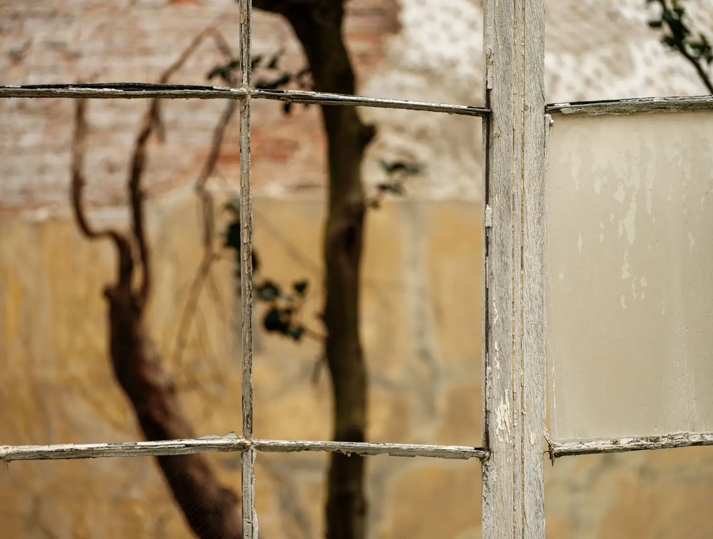

A brand new LIP Crouch End annual exhibition takes place back at the Original Gallery in Hornsey Library N8 9JA 21 March–2 April.
16 artists are showing their work and I am showing 6 Obscured Perception images.
Private view: 23/03/2023 18:30–21:00
Meet the Artists: 01/04/2023 13:00–17:00

| » previous |